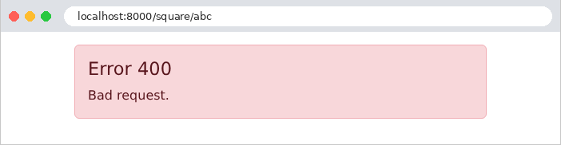

7. El ciclo de vida de una solicitud
Entre la llegada de una solicitud y el envío de su respuesta, el kernel de [Symfony] (la clase [HttpKernel]) realiza varias etapas y, en cada una, publica un evento al que la aplicación puede responder mediante un listener. Ya hemos encontrado varios de ellos: los listeners de [kernel.request] y [kernel.response] (ejemplos 03, 16, 22), de [kernel.exception] (ejemplos 08 y 12) y los resolvedores de argumentos (ejemplo 12). Este capítulo los reúne a todos en un solo ejemplo, que muestra un mensaje en la consola en cada etapa para que se pueda observar el orden:
- 1 y 2. [kernel.request]: la solicitud acaba de llegar. Se llama a todos los listeners de este evento, en orden descendente de prioridad. Uno de ellos es el listener de enrutamiento de [Symfony] (el listener [RouterListener], con prioridad 32): busca la ruta que corresponde a la URL y al método, y almacena su nombre y sus parámetros en los atributos de la solicitud; si ninguna coincide, lanza una excepción [NotFoundHttpException] (404). Un listener con una prioridad mayor que 32 (1) se ejecuta antes del enrutamiento y no conoce la ruta; un listener con una prioridad menor (2) sí la conoce. Un listener de [kernel.request] también puede proporcionar él mismo la respuesta ([$event->setResponse(...)]): en ese caso, no se llama a la acción;
- 3. [kernel.controller]: la acción se ha seleccionado, pero aún no se ha invocado. Un listener puede examinar la acción (sus atributos, como los de [PHP], por ejemplo) o reemplazarla;
- 4. Los resolvedores de argumentos calculan los parámetros de la acción (Ejemplo 12) y luego se publica el evento [kernel.controller_arguments] ;
- 5. La acción y la vista que genera. (Si la acción no devuelve un objeto [Response], un evento adicional, [kernel.view], permite que un listener construya la respuesta a partir de lo que devolvió la acción.);
- 6 y 7. [kernel.response]: la respuesta está lista. Cada listener puede modificarla (agregar un encabezado, una cookie), en orden descendente de prioridad;
- 8. [kernel.terminate], publicado después de enviar la respuesta al navegador (esta es la llamada [$kernel->terminate(...)] del archivo [public/index.php], ejemplo 01). Los listeners ya no pueden cambiar la respuesta: se usan para tareas que pueden esperar (escribir un registro, enviar un correo electrónico, etc.), sin hacer esperar al usuario;
- x. [kernel.exception]: una excepción lanzada en cualquier etapa (por un listener, un resolvedor, la acción o la vista) interrumpe el procesamiento; los listeners de ese evento se encargan de gestionarla. El primer listener que proporciona una respuesta detiene la búsqueda. Esta respuesta pasa entonces por [kernel.response], igual que una respuesta normal. Si ningún listener de la aplicación proporciona una, [Symfony] genera la página de error: detallada en modo de depuración y mínima en caso contrario.
Esto equivale a los filtros de [Java] y a los interceptores de [Spring MVC], a los filtros de acción de [ASP.NET Core MVC], a las funciones [before_request] / [after_request] de [Flask] y al middleware de [Laravel]. La diferencia entre ellos radica en su estructura: un componente de middleware envuelve el resto del procesamiento (llama a [$next] y, por lo tanto, ve la solicitud antes y la respuesta después, dentro del mismo código), mientras que un listener reacciona a un evento; para actuar antes y después de la acción, hay que escuchar dos eventos. Por otro lado, un listener puede intervenir en una etapa específica (después del enrutamiento, después de seleccionar la acción, etc.), y el orden de los listeners lo determina un número: la prioridad.
7.1. Ejemplo 24: las etapas del procesamiento de una solicitud
La aplicación tiene una sola acción, que calcula el cuadrado de un entero: [/square/7]. Según la URL, tiene éxito o falla de diversas maneras. Los mensajes se escriben en la consola del servidor mediante la función [error_log] de [PHP], que el servidor de desarrollo ([php -S]) muestra.
7.1.1. Antes y después de todo lo demás: src/EventListener/Logger.php
Una sola clase puede escuchar varios eventos: el atributo [#[AsEventListener]] se aplica entonces a cada uno de los métodos correspondientes.
- líneas 16–23: el mensaje n.º 1, con la solicitud ([getRequestUri()]: la ruta y los parámetros). La prioridad 100 coloca el listener antes del enrutamiento: aún no ha ocurrido nada en [Symfony];
- Líneas 26–30: el mensaje n.º 7, una vez completado todo lo demás. Una prioridad de -100 coloca el listener después de los de la aplicación y los de [Symfony] (la mayoría de los cuales tiene una prioridad entre -10 y 10). [getStatusCode()] es el código de la respuesta.
Un listener de este tipo no conoce la ruta elegida, ya que el enrutamiento aún no se ha realizado. Se utiliza para el procesamiento que se aplica a todas las solicitudes: registro, gestión de un proxy (el caso de estudio lo menciona en relación con la dirección IP de los clientes)...
7.1.2. Después del enrutamiento: src/EventListener/Block.php
- línea 13: la prioridad predeterminada, 0: el listener se llama después del enrutamiento;
- línea 20: el mensaje n.º 2. El enrutamiento ha almacenado el nombre de la ruta seleccionada en el atributo [_route] de la solicitud (y sus parámetros en los atributos del mismo nombre, ejemplo 12);
- Líneas 21–24: el parámetro [?block] de la URL ([has] verifica su presencia) provoca un error 403 (Forbidden, acceso denegado): la excepción [AccessDeniedHttpException] pone fin al procesamiento.
7.1.3. Antes de la acción: src/EventListener/Timed.php y Timing.php
Queremos medir el tiempo solo de ciertas acciones: las que lo requieren. Basta con marcarlas con un atributo personalizado de [PHP]:
Un atributo es una clase ordinaria, marcada a su vez con el atributo [#[Attribute]]; [Attribute::TARGET_METHOD] indica que se aplica a un método. Este atributo no lleva ninguna información: lo que importa es su mera presencia.
- Líneas 17–28: el evento [kernel.controller]. El método [getAttributes] del evento devuelve los atributos de [PHP] de una clase determinada que lleva la acción (y su clase): una lista vacía significa que la acción no está marcada y el listener no hace nada. De lo contrario, se emite el mensaje n.º 3 y se almacena la hora de inicio en los atributos de la solicitud (ejemplo 12). [hrtime(true)] es un reloj preciso, en nanosegundos, diseñado para medir duraciones;
- líneas 30–36: el mensaje n.º 6, sobre [kernel.response], con el código de la respuesta, si la medición ha comenzado. La prioridad predeterminada, 0, coloca este listener antes del de [Logger] (-100);
- líneas 40–49: el evento [kernel.terminate], publicado después de enviar la respuesta: el mensaje n.º 8, que contiene el tiempo transcurrido desde el mensaje n.º 3. La comprobación de la línea 45 verifica que la medición haya comenzado: el evento se publica para todas las solicitudes, incluso las que no llegaron a la acción.
Así es como [Symfony] mismo implementa algunos de sus atributos: [#[IsGranted]], que trataremos en el próximo capítulo, lo lee un listener de [kernel.controller_arguments], que deniega el acceso a la acción si el usuario no tiene el permiso solicitado.
7.1.4. Los argumentos de la acción: src/Binding/IntegerResolver.php y el controlador
Un resolvedor de argumentos (Ejemplo 12), que escribe el mensaje n.º 4. Acepta cualquier texto y lo convierte en un entero, o en [null] si no lo es ([filter_var] devuelve [false]): a diferencia de una restricción como [requirements] (Ejemplo 02), que devolvería una página 404 para [/square/abc], aquí la acción determinará el resultado.
- línea 20: la acción está marcada con nuestro atributo [#[Timed]];
- línea 21: el parámetro [$n] lo proporciona nuestro resolvedor (atributo [#[ValueResolver]], ejemplo 12);
- líneas 24–26: un parámetro que no es un entero: error 400 (Bad Request), provocado por la excepción [BadRequestHttpException];
- líneas 27–29: el número 13 provoca un error “inesperado”. [DomainException] es una clase de excepción de la biblioteca estándar de [PHP];
- línea 30: el caso normal. La vista [calc/result.html.twig] simplemente muestra el resultado.
7.1.5. Gestión de errores: src/EventListener/ErrorPage.php
- líneas 15–17: el listener de [kernel.exception], con prioridad -10. [Symfony] registra dos listeners para este evento: el primero, con prioridad 0, registra la excepción en el log; el segundo, con prioridad -128, genera la página de error de [Symfony]. El nuestro queda entre los dos: la excepción se registra y luego mostramos la página;
- línea 21: el listener no es un controlador y no tiene el método [render] de [AbstractController]: recibe el motor [Twig] directamente (la clase [Twig\Environment]), cuyo método [render] devuelve la página renderizada como una cadena;
- líneas 28–32: todos los errores HTTP: una URL sin ruta (404), un método denegado (405) y las excepciones [AccessDeniedHttpException] (403) y [BadRequestHttpException] (400)... implementan la interfaz [HttpExceptionInterface] y llevan su código ([getStatusCode()]). Por lo tanto, esta única comprobación reemplaza todas las páginas de error de [Symfony] por las nuestras;
- líneas 33–36: una excepción de la clase [DomainException] (o de sus subclases; véase el Ejemplo 08): un error “inesperado”, convertido en una página de error “personalizada”, con código de estado 500 (Internal Server Error). El mensaje de la excepción se muestra en la consola, pero no en la página: puede contener detalles internos que no son relevantes para el usuario;
- líneas 37–39: las demás excepciones las gestiona [Symfony];
- líneas 42–43: [setResponse] proporciona la respuesta, que reemplaza a la excepción y detiene la propagación del evento: los listeners posteriores (la página de error de [Symfony]) no se llaman.
La página de error recibe el código de error y muestra un mensaje apropiado:
- Línea 8: un arreglo asociativo definido en la vista ([{key: value, ...}]), del que se recupera el elemento con el índice [code]; el operador [??] proporciona un valor predeterminado cuando este elemento no existe.
Existe otra forma, aún más simple, de reemplazar las páginas de error sin escribir un listener: una vista llamada [templates/bundles/TwigBundle/Exception/error404.html.twig] reemplaza la página de error 404, y lo mismo para cada código ([error.html.twig] para todos los demás). Estas vistas solo se usan en producción; el modo de depuración conserva sus páginas detalladas (se pueden previsualizar en modo de depuración en [/_error/404], siempre que se hayan importado las rutas [@FrameworkBundle/Resources/config/routing/errors.php]). Un listener, en cambio, permite cualquier tipo de gestión (una respuesta JSON, una redirección, etc.) en todos los modos.
7.1.6. Ejecución
Caso normal, [/square/7]:

La consola del servidor muestra las ocho etapas en orden (se han eliminado las fechas que [php -S] coloca al comienzo de las líneas):
La línea [[info]] proviene del enrutamiento de [Symfony]: es su registro (log). Sin una biblioteca de registro (la más utilizada es [Monolog], instalada con [composer require logger]), [Symfony] usa un registro mínimo, que escribe en la consola. La última línea es el registro del servidor de desarrollo, escrito una vez completada la solicitud. Un acceso bloqueado, [/square/7?block]:

El listener [Block] lanzó una excepción: la acción no se seleccionó, sus argumentos no se calcularon y no se llamó. La excepción fue registrada por [Symfony] y luego convertida en una respuesta por nuestro listener; esta respuesta pasó por [kernel.response]. El evento [kernel.terminate] se publicó, pero [Timing] no mostró nada, ya que la medición no había comenzado. Un parámetro que no es un entero, [/square/abc]:

Esta vez, la acción se llamó con [null] (que se representa como una cadena vacía: [square()]), y fue esta acción la que lanzó el error 400. Un error “inesperado”, [/square/13]:

La excepción fue gestionada por nuestro listener: el usuario ve la página de error “personalizada”, no la página detallada, aunque el modo de depuración esté activo. De todos modos se registró, con el nivel [critical] (un error HTTP es simplemente un [error]): al igual que [Laravel], [Symfony] distingue entre registrar una excepción en el log y la respuesta que genera. Por último, una URL que no corresponde a ninguna ruta, [/unknown]:
El enrutamiento falló: ningún listener posterior, ninguna acción. La página 404 es la nuestra:
Centrémonos en lo esencial. Los listeners de los eventos del kernel son el lugar adecuado para las comprobaciones comunes a muchas acciones (¿el usuario ha iniciado sesión? ¿Tiene permiso para acceder a esta acción?): constituyen la base del componente de seguridad de [Symfony], que el próximo capítulo utiliza para la autenticación. Los listeners de eventos de [kernel.exception] y las vistas de error garantizan que el usuario nunca vea una página técnica, sea cual sea el error: el caso de estudio aprovecha esto.